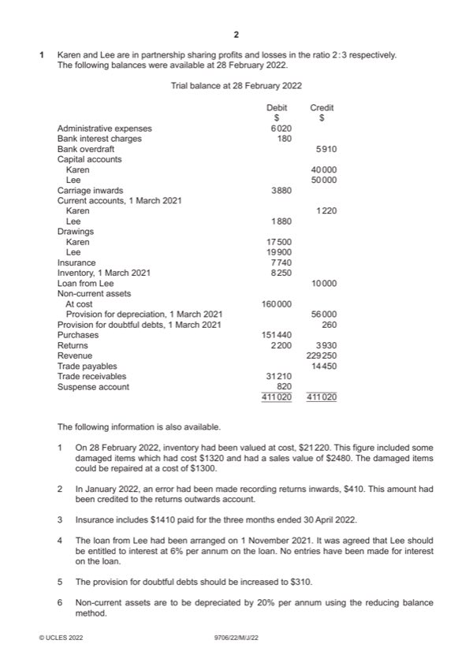
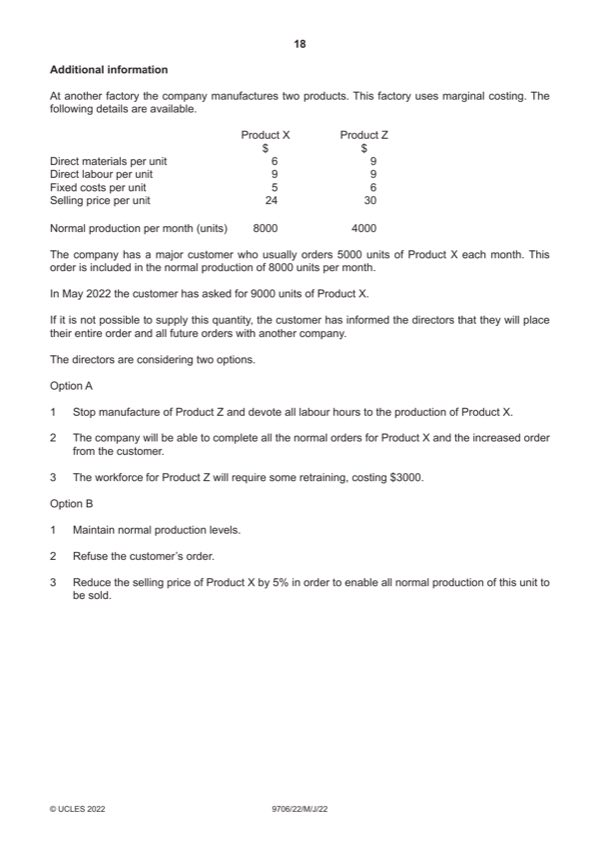

Question 1

Original paper page 2

Original paper page 18
Part 1(a) — solution
Answer: 156 170 · 160 050
Karen and Lee 9
Income statement for the year ended 28 February 2022
$ $
Revenue 229 250
Less returns inwards (2200 + 410) (2 610)
226 640 (1)
Cost of sales
Opening inventory 8 250
Purchases 151 440
Less returns outwards (3930 – 410) (3 520)
156 170
Carriage inwards 3 880 (1)
160 050
Less closing inventory W1 (21 080) (1)
(138 970)
Gross profit 87 670 (1)OF
Less expenses
Administrative expenses 6020
Bank interest charges 180
Insurance W2 6 800 (1)
Loan interest (Lee) W3 200 (1)
Depreciation of non-current assets W4 20 800 (1)
Increase in provision for doubtful debts W5 50 (1)
(34 050)
Profit for year 53 620 (1)
W1 Closing inventory
$
Original valuation 21 220
Less reduction in valuation of damaged items
Cost 1320 less NRV 1180 (2480 – 1300) (140)
Mark points
- Correct result: 156 170
- Correct result: 160 050
Part 1(a) — solution
- 7740 less prepaid 940 (2/3 1410) = $6800
- 6% $10 000 1/3 = 200
- 20% nbv $104 000 ($160 000 – $56 000) = $20 800
- $310 – $260 = $50
Mark points
- 7740 less prepaid 940 (2/3 1410) = $6800
- 6% $10 000 1/3 = 200
- 20% nbv $104 000 ($160 000 – $56 000) = $20 800
- $310 – $260 = $50
Part 1(b) — solution
Lee 4
Current Account
$ $
Balance b/d 1 880 Loan interest 200 (1)OF
Drawings 19 900 (1) Share of profit 32 172 (1)OF
Balance c/d 10 592
Mark points
- Include the ideas shown in the solution above.
Part 1(c) — solution
- The current account balance will be reduced by ($10 592 – $5806 = $4786 (1)
Mark points
- The current account balance will be reduced by ($10 592 – $5806 = $4786 (1)
Part 1(d) — solution
- Fewer legal requirements (1) which means it has fewer costs (1) 2
- No requirement to publish financial statements (1) which means the partnership can keep its affairs private (1)
- No risk of dilution of ownership (1) there are less owners in a partnership (1)
Mark points
- Fewer legal requirements (1) which means it has fewer costs (1) 2
- No requirement to publish financial statements (1) which means the partnership can keep its affairs private (1)
- No risk of dilution of ownership (1) there are less owners in a partnership (1)
Part 1(e) — solution
- Shareholders enjoy limited liability for debts In the case of a company being wound up (1), and they would only lose 4
- Limited companies can access larger amounts of finance (1) through the issue of additional shares/debentures (1)
Mark points
- Shareholders enjoy limited liability for debts In the case of a company being wound up (1), and they would only lose 4
- Limited companies can access larger amounts of finance (1) through the issue of additional shares/debentures (1)
Part 1(f) — solution
- Will reduce cash outflows (1)
- Costs may be saved through less expenditure on storage/carriage inwards (1)
- Less chance of wastage/obsolescence of inventory (1)
- Business could lose valuable trade discounts (1)
- Risk of running out of inventory of popular products (stock-outs) (1)
- Limited inventory for customers may affect reputation (1)
Mark points
- Will reduce cash outflows (1)
- Costs may be saved through less expenditure on storage/carriage inwards (1)
- Less chance of wastage/obsolescence of inventory (1)
- Business could lose valuable trade discounts (1)
- Risk of running out of inventory of popular products (stock-outs) (1)
- Limited inventory for customers may affect reputation (1)